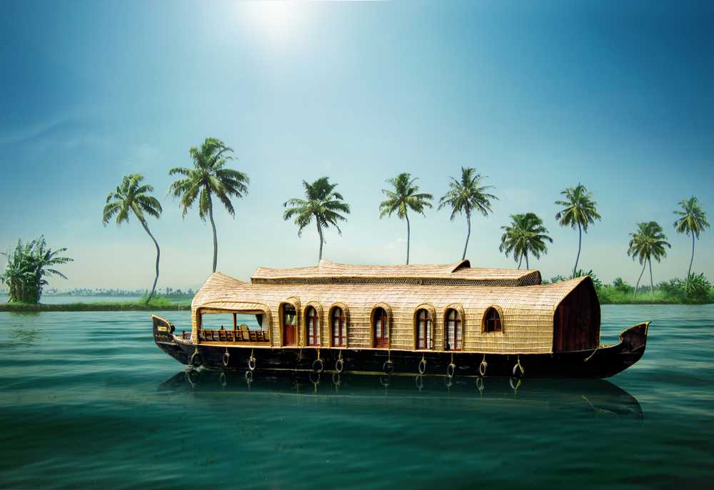

TripGuide
Lush green tea plantations, serene winding backwaters and spice plantations are a few features that define Kerala as one of the most popular tourist destinations in India.
Popular as ‘God’s Own Country’ Kerala is a haven for travellers who come here to unwind in the salubrious climes, away from the concrete jungle.
In a state where the topography ranges from cool hills to balmy sea beaches, Kerala is a sight for sore eyes.
Here is a list of places which are a ‘must-see’ for all those visiting this tropical paradise.
